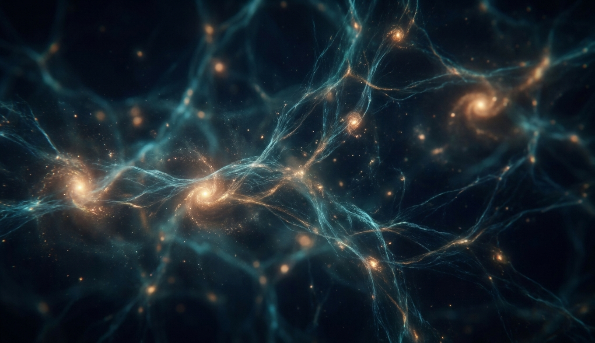
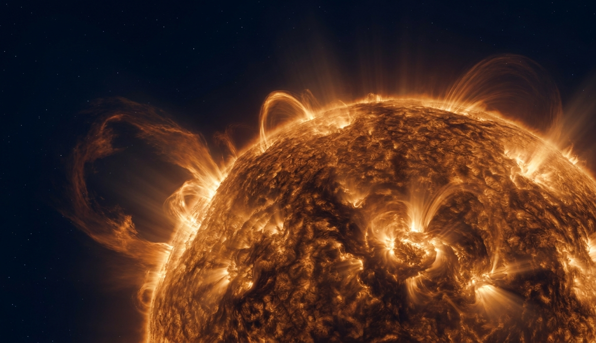
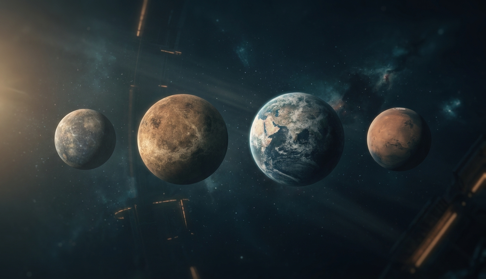
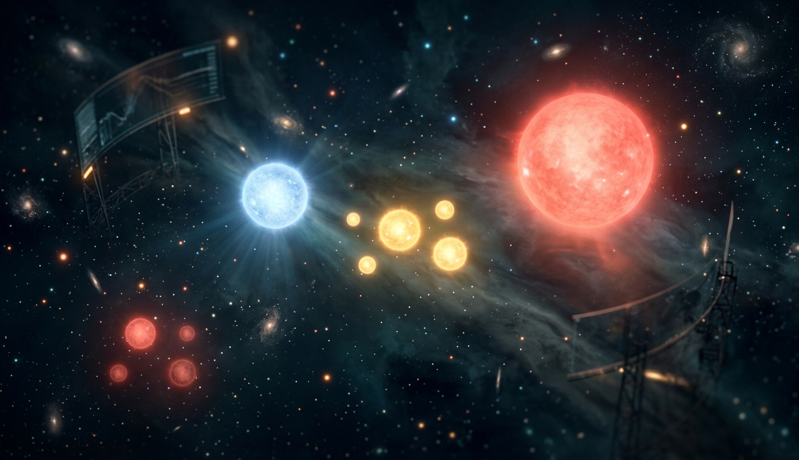
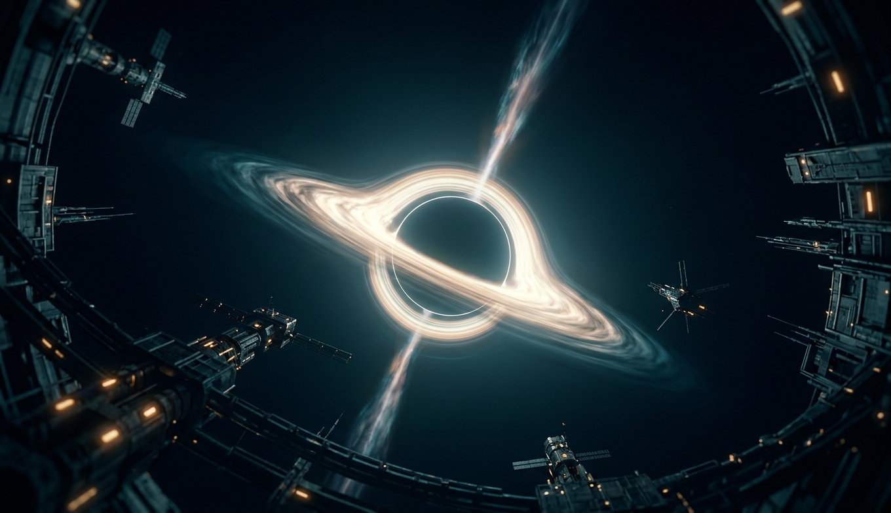
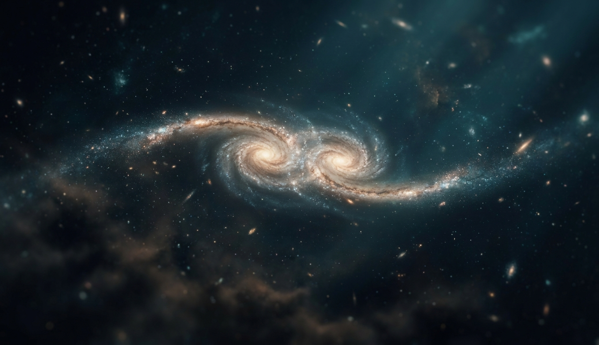
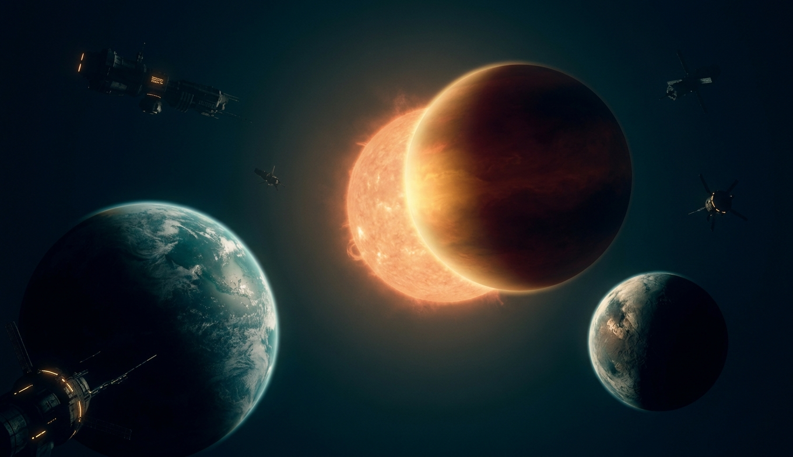
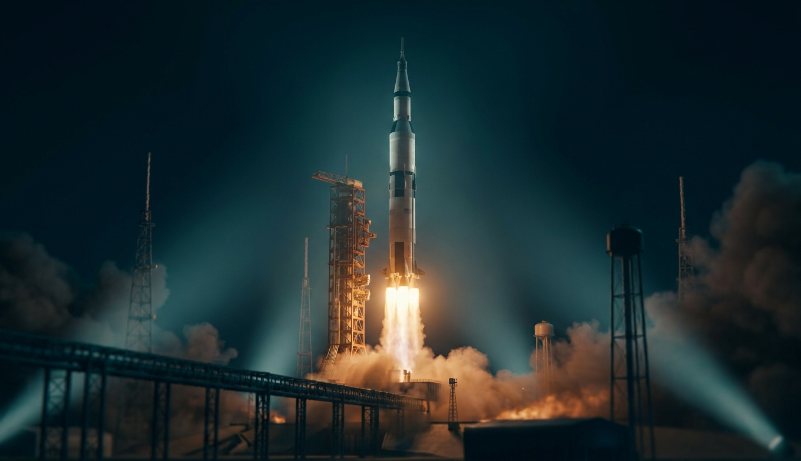
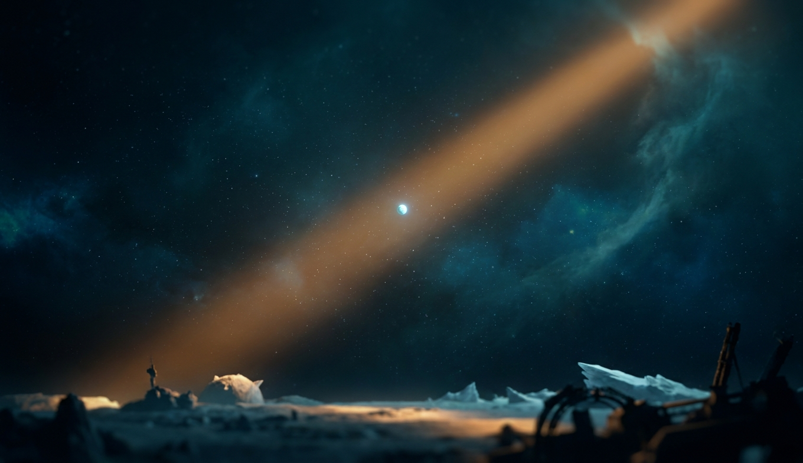

Мы знаем, что было через одну секунду после начала, с точностью лучше, чем знаем погоду на завтра. И не знаем, что было до 10⁻⁴³ секунды. Между этими двумя фактами — вся космология.

99.86% массы Солнечной системы. Всё остальное — планеты, луны, кометы, ты — погрешность округления. Разбираем слоями, от центра к короне.

Четыре каменных шара внутри, четыре газовых гиганта снаружи, между ними — обломки несостоявшейся планеты, за ними — ледяной хлам до половины светового года. Разбираем каждый.

Одна цифра при рождении — масса — определяет, каким цветом звезда будет светить, сколько проживёт и чем закончит: тихим карликом, нейтронной звездой или чёрной дырой.

Не «дыра» и не «всасывает». Это область, откуда не выходит ничего, включая свет, — и единственное место во Вселенной, где общая относительность и квантовая механика обязаны встретиться и пока не договорились.

Двести миллиардов звёзд в нашей — и два триллиона галактик в видимой Вселенной, выстроенных в паутину из нитей и стен вокруг пустот размером в сотни миллионов световых лет.

До 1995 года мы знали одну планетную систему. Сейчас — тысячи, и большинство не похожи ни на что у нас: планеты из лавы, из алмаза, с дождём из стекла и с двумя солнцами.

Люди — до Луны, 384 000 км, последний раз в 1972. Роботы — до края Солнечной системы. Всё остальное — свет, который мы ловим. Разбираем, кто где был и что дальше.

Вояджер-1, 1990, 6 млрд км: по просьбе Сагана камеру развернули назад. Земля — 0.12 пикселя в солнечном луче. Всё, что когда-либо случилось с людьми, — на этой точке.